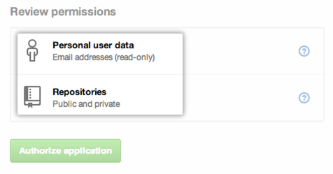

You can connect your GitHub identity to third-party applications using OAuth. When authorizing one of these applications, you should ensure you trust the application, review who it's developed by, and review the kinds of information the application wants to access.
When a third-party application wants to identify you by your GitHub login, you'll see a page with the developer contact information and a list of the specific data that's being requested.
Review this information carefully! You can always say no, and deny access to the application.
Contacting the application developer
Because an application is developed by a third-party who isn't GitHub, we don't know exactly how an application uses the data it's requesting access to. You can use the developer information at the top of the page to contact the application owner if you have questions or concerns about their application.
If the developer has chosen to supply it, the right-hand side of the page provides a detailed description of the application, as well as its associated website.
Types of application access and data
Applications can have read or write access to your GitHub data.
- Read access only allows an application to look at your data.
- Write access allows an application to change your data.

Tip: We recommend that you regularly review your authorized applications list. Remove any applications and tokens that haven't been used in a while.
There are several types of data that applications can request.
- Personal user data
- User data includes information found in your user profile, like your name, e-mail address, and location. Applications can **never** get information you've chosen not to make public.
- Repositories
- Repository information includes the names of contributors, the branches you've created, and the actual files within your repository. Applications can request access for either public or private repositories on a user-wide level. **This is one of the most expansive configurations you can permit, so accept it with caution!**
- Repository Delete
- Applications can request to delete repositories that you administer, but they won't have access to your code at all.
- Deployments
- Deployment status access allows applications to determine if a deployment is successful against a specific commit for public and private repositories. Applications won't have access to your code.
- Commit status
- You can grant access for a third-party application to report your commit status. Commit status access allows applications to determine if a build is a successful against a specific commit. Applications won't have access to your code, but they _can_ read and write status information against a specific commit.
- Notifications
- Notification access allows applications to read your GitHub notifications, such as comments on issues and pull requests. However, applications remain unable to access anything in your repositories.
- Gists
- Gist access allows applications to read or write to both your public and secret Gists.
- Hooks
- Webhooks access allows applications to read or write hook configurations on repositories you manage.
Requesting Updated Permissions
Applications can request new access privileges. When asking for updated permissions, the application will notify you of the differences.